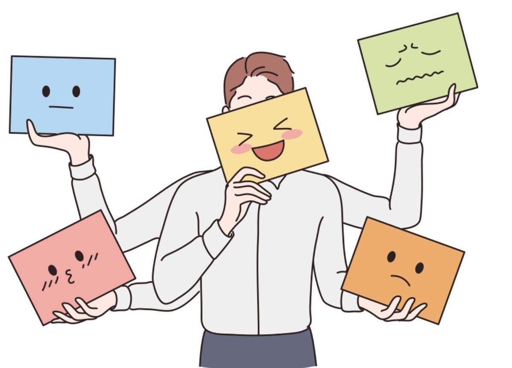
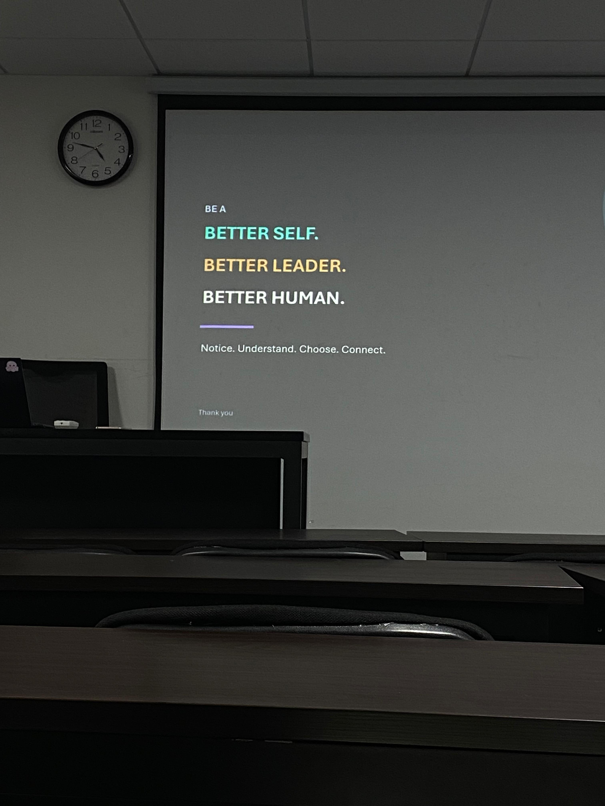
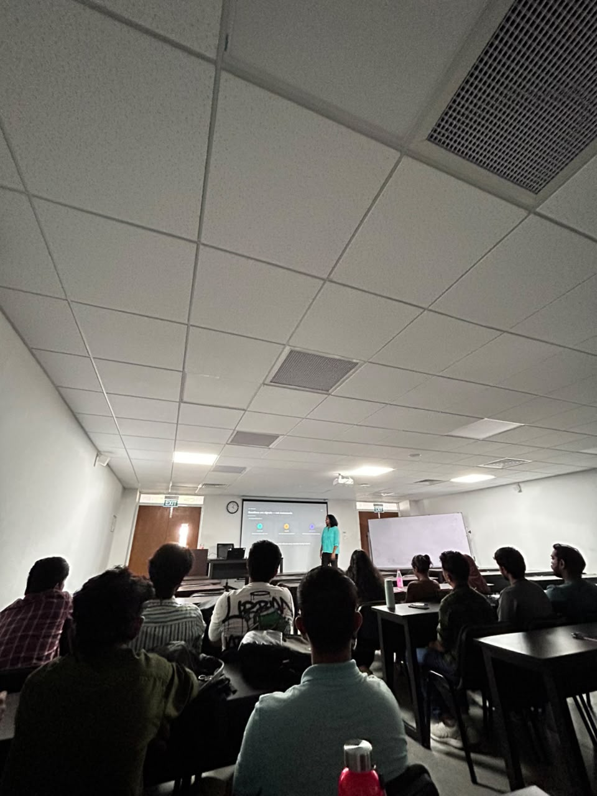
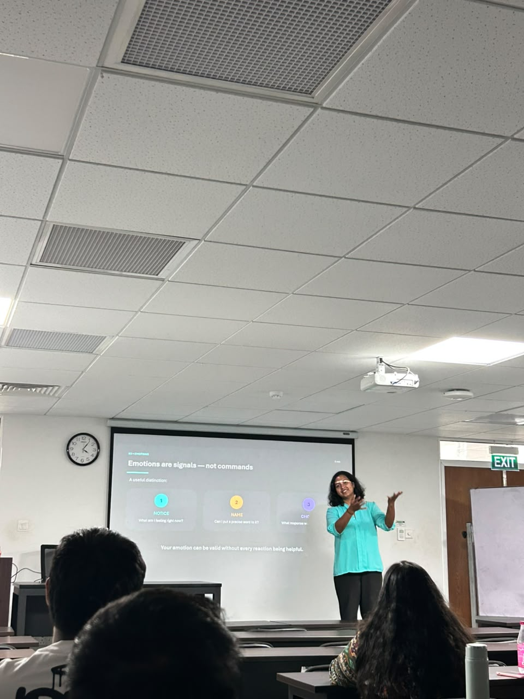
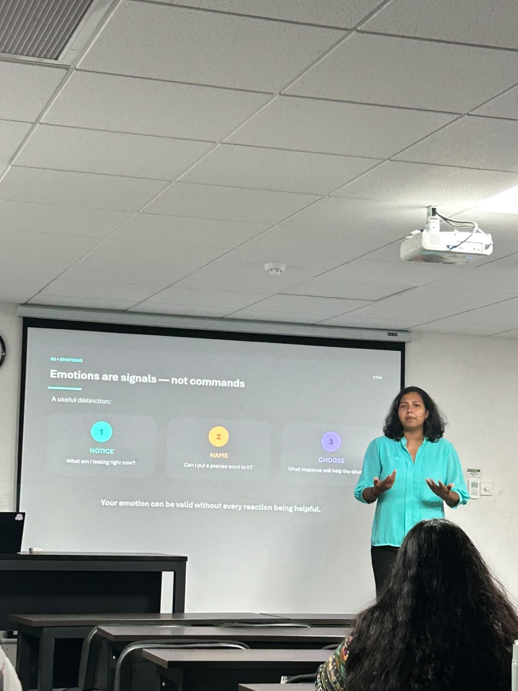

PROFESSIONAL SKILLS / SESSION 09
Emotional Intelligence & SWOT Analysis
Self-awareness and continuous personal development.

Overview
Self-awareness and continuous personal development.
Learning outcomes
- Understand self-awareness, self-management, and social awareness.
- Recognize the importance of relationship management.
- Identify strengths, weaknesses, opportunities, and threats through SWOT analysis.
Activities
As part of the workshop on emotional intelligence and personal SWOT analysis, we shared a piece of paper with our friends and asked them to write down our strengths and weaknesses.
Understanding myself through others
Our teacher explained that we may not always recognise our own strengths and weaknesses, but our closest friends can often notice them. Reading their feedback helped me understand myself better and recognise both my strengths and the areas I can improve.
My reflection
This workshop focused on self-awareness, self-management, social awareness, and relationship management. I also learned about SWOT analysis and how to identify personal strengths, weaknesses, opportunities, and threats. The session encouraged me to understand myself better and work towards continuous personal improvement.
A message to take forward


Emotional intelligence in practice





